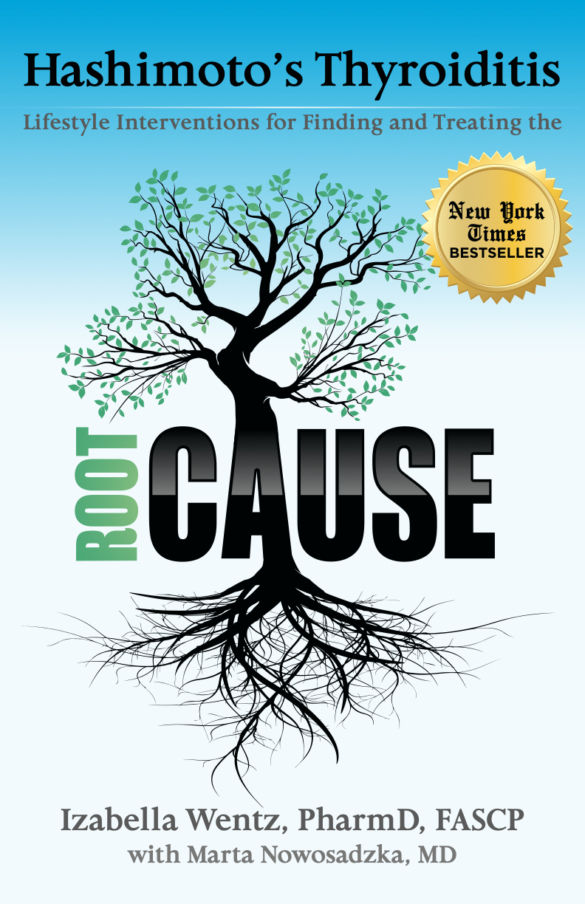
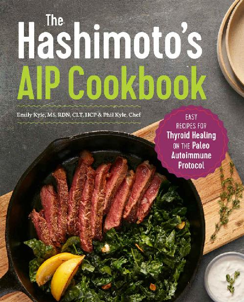

Hashimoto’s Thyroiditis Reference Library
4 complete, unabridged books formatted in clean, semantic HTML for human and LLM reading.

Hashimoto’s Thyroiditis: Lifestyle Interventions for Finding and Treating the Root Cause
The foundational root-cause clinical guide covering thyroid physiology, medication types and conversions, nutrient depletions, the iodine controversy, gut permeability, infections, adrenal dysfunction, toxins, diets, supplements, and lab testing.

Hashimoto’s Protocol: A 90-Day Plan for Reversing Thyroid Symptoms and Getting Your Life Back
A step-by-step 90-day clinical and lifestyle protocol featuring the Fundamental Protocols (Liver Support, Adrenal Recovery, Gut Balance) and Advanced Protocols, self-assessments, checklists, and targeted protocols.

Hashimoto’s Food Pharmacology: Nutrition Protocols and Healing Recipes
Nutrition protocols (Root Cause Intro, Paleo, and Autoimmune diets), meal plans, digestive support strategies, and 125 thyroid-supporting recipes with full nutritional analyses.

The Hashimoto’s AIP Cookbook: Easy Recipes for Thyroid Healing on the Paleo Autoimmune Protocol
Practical guide to the Paleo Autoimmune Protocol (AIP) for Hashimoto's, with a two-week meal plan, food reintroduction tracker, and over 100 easy 5-ingredient, 30-minute, one-pot, and make-ahead recipes.